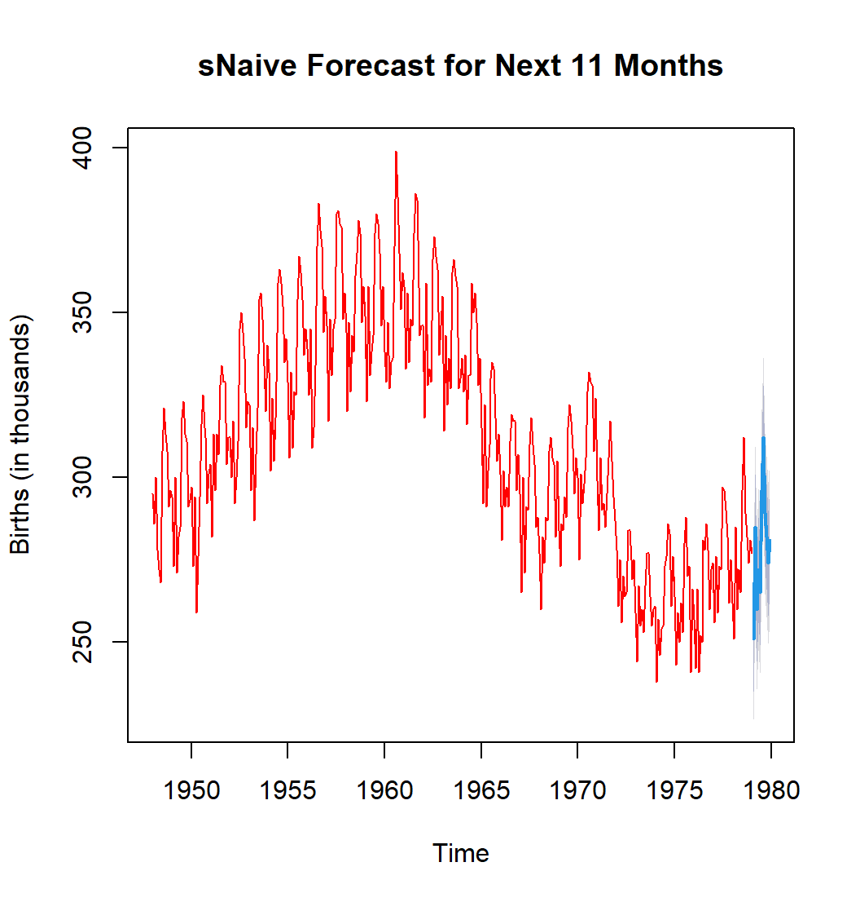
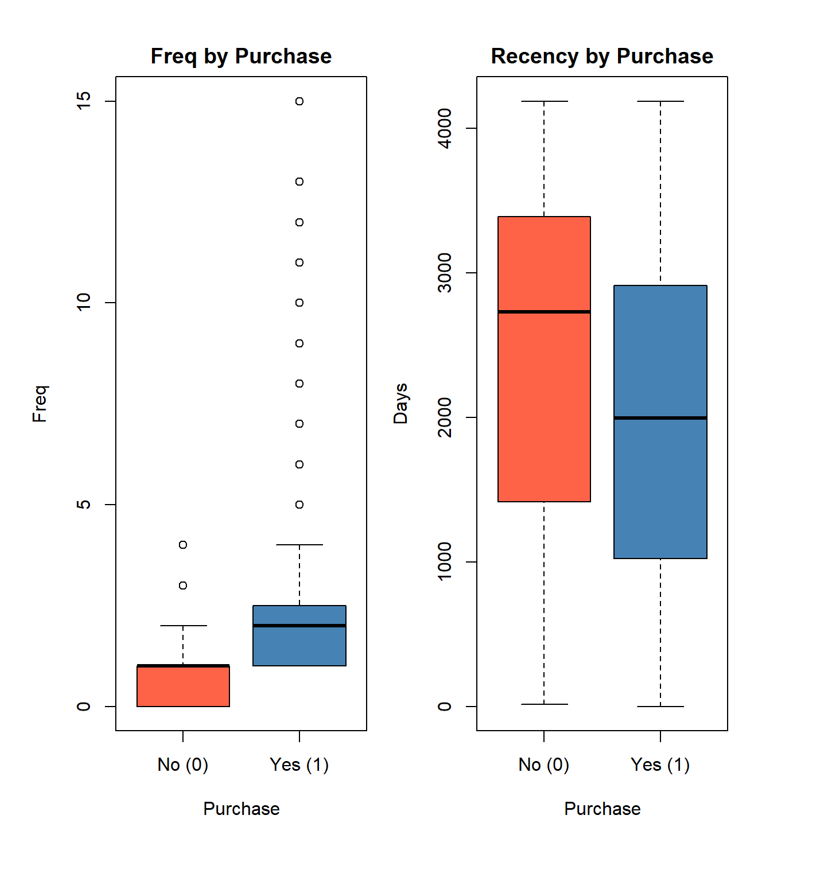
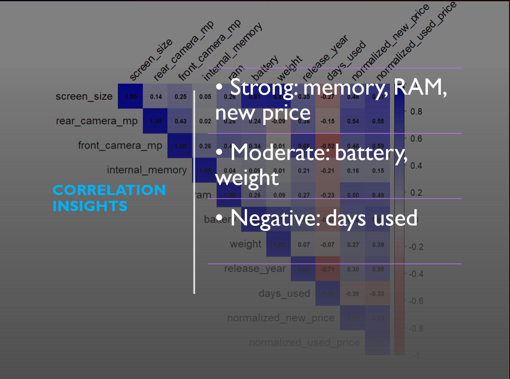
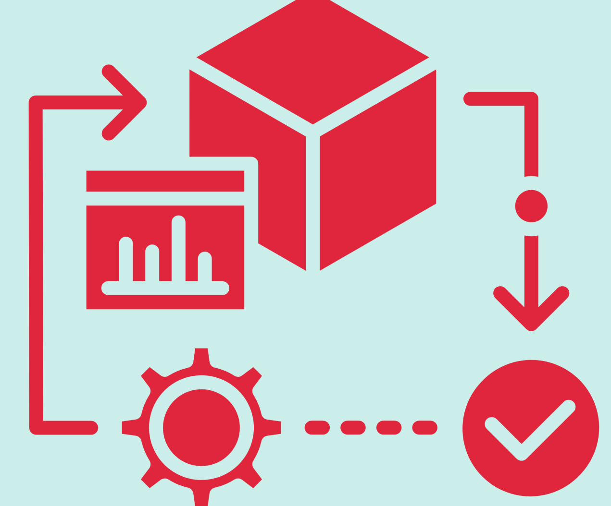

Data Science Portfolio
Exploring the intersection of Machine Learning, AI, and Real-World Problem Solving

Applied Time Series Analytics & Forecasting
Multi-domain forecasting using classical and modern models.

COVID-19 Mortality Prediction & Analysis
End-to-end ML pipeline for epidemiological mortality modeling.

Mortgage Payback Analytics
Predicting mortgage payoff behavior using supervised models.

Software Mailing Response Analytics
Customer targeting optimization using response modeling.

Smartphone Resale Price Prediction
Regression + classification for used device pricing analytics.

Predictive Viability Check (Pre-Modeling Feasibility)
A practical framework to assess data quality, leakage risk, stability/drift, and modeling feasibility before building ML.